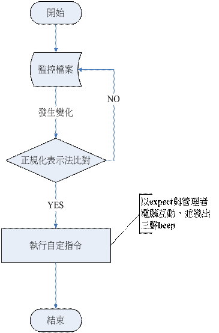
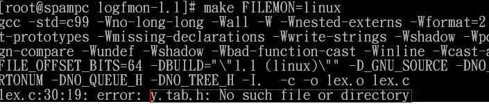
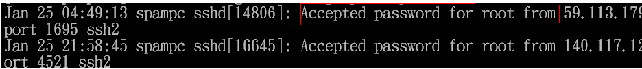

以 logfmon 與 expect 實作登入告知系統

前言
在一般的企業中，伺服器主機通常置於封閉機房中，而系統管理者辦公的地點往往是在另一個辦公室，系統管理者僅能使用如網頁介面的管理軟體來查看伺服器狀態，如此，系統管理者需被動的時時查看網頁以得知目前的系統狀態，而一個當系統觸發某種事件即主動通知管理者的監控系統，也許是大多數系統管理者所需要的。因此在本文中，筆者將結合開源碼社群資源，實作一個當機房中的主機有人登入時，即會傳送相關訊息至管理者所在的電腦（或同辦公室的其它電腦並發出三聲 beep 聲）來告知管理者有人登入主機，本系統所需的套件如下表所示：
|
軟體名稱 |
說明 |
官方網站 |
|---|---|---|
|
logfmon |
即時監控檔案機制，當所監控的檔案發生變化並符合使用者所設定的條件即執行使用者設定的動作。在這邊，我們將利用此程式來監控 log 檔（/var/log/secure，此檔案會存有使用者登入的資訊） |
https://sourceforge.net/projects/logfmon/
|
|
expect |
一種互動式的語言，在撰寫適當的劇本後，即可使程式自動與系統互動而不需人為的介入 |
https://www.nist.gov/mel/msid/expect.cfm
|
|
sshlogin.pl |
部署在被監控端，自撰寫的 expect 程式，一但有人正常登入，即執行此程式，利用SSH與主控端連，並執行主控端的 beep 程式，發出三聲 Beep 聲音，提醒系統管理者 |
|
|
beep.c |
部署在主控端，發出三聲 beep 的程式來提醒管理者 |
什麼是logfmon？
logfmon 主要是利用來監控檔案的變動情況，一旦發現被監控的檔案內容發生變動（如發生新增或刪改），即將變動的範圍與使用者自定義的正規表示法（Regular Expression，RE）規則比對，一但比對成功（match）即執行使用者自定義的指令或程式。比對流程如下圖示:

由於筆者的系統為 fedora 11 系統，系統預設會將安全相關的訊息（其中也包含了登入認證）等相關的訊息寫入 /var/log/secure 中，而 logfmon 即是利用即時監控 /var/log/secure 檔案，一旦檔案發生變化（即有新的訊息寫入），即需利用以正規表示法表示的條件式，即時將相關的 log 解析（在此僅需要正常登入的 log 資訊）出來並執行相關的動作（以 expect 自動與管理者所在辦公室的電腦互動並發出三聲的 beep 來提醒管理者，有人已登入主機）。由於 logfmon 使用正規表示法來設定比對的條件式，以下即簡單介紹正規表示法（由於本方案僅需模式比對即可達成要求，所以，筆者僅介紹模式比對，其餘更進階的用法就留待 讀者自行研究了） 正規表示法（Regular Expression）是利用一些含有特殊符號的字串，來描述或匹配（match）符合某種句型的句子。下表即說明正規表示法所使用的特殊符號：
-
^: 符合欄位開頭即符合，如設定為 ^sex，則 sexual 即符合；
-
$: 符合欄位結尾即符合，若設定為 ty$，則 Beauty 即符合；
-
.: 代表任何一個字元，如 (pl.y)，則 play 即符合，但 ply 不符合，即 pl 與 y 中間一定要有一個字元；
-
*: 重覆零至無限多個的 RE 符號，如只要 pl 開頭的單字均符合，即可使用 pl*；
-
\脫逸符號（escape）: 用來將特殊符號視為普通字元。如 \^ 即代表 ^ 是字元，而不是上述的意義；
-
( ): 模式比對，用括號內一連串的特殊符號來匹配含有某種句型的句子，這也是本方案所要使用的正規表示法模式。如 ipv4 的 ip 位址型式為數字1.數字2.數字3.數字4，如 192.168.2.1，即可用下列的模式比對 (\d+)(\.)(\d+)(\.)(\d+)(\.)(\d+)，其中：
-
$0: 全部的資料 (192.168.2.1)
-
$1: 即表示 192
-
$2: 表示 .
-
$3: 即表示 168… 依此類推
-
在介紹完正規表示法後，接下來即來談談如何安裝 Logfmon，安裝步驟如下： 請讀者至 https://sourceforge.net/projects/logfmon/，下載 logfmon 最新版本。解壓縮後，直接使用 make ，在編譯的過程，筆者曾發生找不到 y.tab.h 的錯誤訊息，如下圖所示：

解決方式即為先利用 make y.tab.c y.tab.h 指令先產生 y.tab.h 後，再重新使用 make && make install 將 logfmon 安裝到系統上。完裝完成後，Logfmon 所使用的設定檔為 /etc/logfmon.conf，logfmon.conf 參數意義如下所述：
- User
- 執行 logfmon 時，所使用的 user 權限
- Group
- 執行 logfmon 時，所使用的 group 權限
- File
- 設定 logfmon 要監控的檔案名稱
- Logregexp
- 初步的過濾，用來過濾符合格式的字串，logfmon預設規則為 syslog 格式，即表示被監控檔案符合syslog格式的資料，才可進入使用者自定義的規則，再進行細步的過濾。
- Match
- 規則設定格式為：match〔條件式〕action〔執行事件〕
- 當符合條件式時，即執行 action 後所定義的事件其中 action 事件可分為：
- ignore: 若符合條件式，則不理會
- exec: 若符合條件式，即執行後續的指令
- write: 若符合條件式，則將該符合的字串寫入檔案中
- write-append: 若符合條件式，則將該符合的字串新增至檔案中
接下來，我們即是要確定正常登入的訊息，在 /var/log/secure 檔案中是長什麼樣式，在 fedroa 11 的系統上，相關登入的資訊，都會記錄在 /var/log/secure， 成功登入的樣式如下圖：

p { margin-bottom: 0.21cm; }pre.western { font-family: "DejaVu Sans Mono",monospace; }pre.cjk { font-family: "DejaVu Sans",monospace; }pre.ctl { font-family: "DejaVu Sans Mono",monospace; }因此我們可以根據樣式，設定下列相關的正規表示法的條件式，來過濾符合正常登入的 log，根據此樣式，我們可設定下列相關正規表示法的條件式，來過濾符合正常登入記錄的 log：
(.*)(Accepted password for)(.*)(from )(.*)
只要列資料中含有 Accepted password for... from… 的樣式即符合條件。
在確定相關的正規表示式後， 我們即可開始設定 logfmon 的組態檔 (/etc/logfmon.conf)，如下所示：
Set logregexp #初步過濾，log預設僅解析syslog型式的資訊。可利用 logregexp
來重新設定初步過濾的條件。在此使用 (.*) 即表示所有的字元都
符合條件，意即不使用初步過濾的功能。
File "/var/log/secure" tag secure #設定欲監控的檔案，並命名為 secure 的代號
（後續的過濾條件即利用 secure 代號來設定）
match in secure "(.*)(Accepted password for )(.*)( from )(.*)( port )(.*)$"
exec (echo $0>>/tmp/authlog && perl /usr/bin/sshlogin.pl $5;)" #過濾條件 match in secure (針對為secure做過濾，即針對 /var/log/secure 檔案過濾，其中 (.*)(Accepted password)(.*)$
意指只要 /var/log/secure 檔案中每列的 log 資料只要含有 Accepted password 的字串即符合過濾條件並執行 exec 後的動作，
在這邊會執行兩個動作：
1. echo $0>>/tmp/authlog #將登入資訊寫入 /tmp/authlog
2. 執行 sshlogin.pl $5（此程式為 expect 程式，負責與管理者的電腦互動，其中 $5 為登入的來源IP）
至此 logfmon 即設定完成，啟動僅需執行 logfmon &。讀者可利用 ps aux | grep logfmon 來檢查 logfmon 是否有正常執行。
什麼是expect？
Expect 是 unix 系統中用來進行自動化控制和測試的軟體工具，一但設定好適當的劇本，expect 即會按照劇本的設定，自動的與系統互動而無需人為的介入。安裝 expect 很簡單，只要執行 yum install expect* 即可將相關的 Expect 程式安裝進去。簡單的 expect 劇本其實就是利用 expect 送出命令，再期待系統的回應，然後再根據系統的回應來決定下一步的動作。簡單的範例如下（以自動登入 telnet 伺服器為例）其中：
-
$remote_server：遠端的telnet伺服器位址；
-
$my_user_id：登入的帳號資訊；
-
$my_password：登入的密碼資訊；
-
$my_command：欲執行的指令。
完整範例如下：
pre.western { font-family: "DejaVu Sans Mono",monospace; }pre.cjk { font-family: "DejaVu Sans",monospace; }pre.ctl { font-family: "DejaVu Sans Mono",monospace; }p { margin-bottom: 0.21cm; }spawn telnet $remote_server #啟動一個 telnet 的程序
expect "username:" #假如系統回應含有 username 的字樣，即表示系統需要使用者帳號
send "$my_user_id\r" #自動將帳號資訊寫入
expect "password:" #假如系統回應含有 password 的字樣即表示系統需要使用者帳號
send "$my_password\r" #自動將密碼資訊寫入
expect "%" #假如系統回應含有 % 的字樣，表示已登入成功，% 是系統的提示字元
send "ls\r" #自動執行 ls 指令
send "exit\r" #自動執行 exit 指令，離開 telnet 伺服器
expect eof #expect 結束
在這邊 expect 的用途，在於利用 SSH 與管理者的電腦互動，當發現伺服器主機有登入的事件後，即使用 expect 程式以 SSH 與管理者的電腦互動，並遠端執行管理者電腦上的程式（發出三聲 beep 聲來告知管理者有人登入機房的主機）。在這邊，由於我們是使用 SSH 與監控端的電腦通訊並執行監控端電腦上的程式，在 perl 的模組即有提供相關的模組 (Net::SSH::Expect) 可自動化執行 SSH 登入並執行相關指令），因此，在這邊我們將使用此模組來自動登入管理者的電腦並執行相關程式。安裝 Net::SSH::Expect 步驟如下
-
wget https://search.cpan.org/CPAN/authors/id/B/BN/BNEGRAO/Net-SSH-Expect-1.09.tar.gz #至 cpan 網站取得 Net::SSH::Expect 模組
-
解壓縮後，利用 perl Make.pl && make && make install 來安裝
pre.western { font-family: "DejaVu Sans Mono",monospace; }pre.cjk { font-family: "DejaVu Sans",monospace; }pre.ctl { font-family: "DejaVu Sans Mono",monospace; }p { margin-bottom: 0.21cm; }
接下來，筆者以 perl 搭配 Net::SSH::Expect 撰寫一個簡單的 perl 程式（檔名為 sshlogin.pl），此程式可自動登入遠端的主機（在這裏即為監控端的電腦） sshlogin.pl程式內容如下：
#!/usr/bin/perl
use Net::SSH::Expect; #使用 Net::SSH::Expect 模組
my $ssh = Net::SSH::Expect->new ( #新增一個 expect 的類別
host => "remote IP"， #設定欲連線的主機 ip 位址，請填入監控端主機 IP 位址
password=> ' remote IP登入密碼'， #設定登入所需的密碼
user => 'root'， #設定登入帳號，在此例為 root（這裏特別強調一點，因為 LINUX 系統特別的規定，
要執行筆者所寫的 beep 程式，需要 root 權限，這方面有興趣的讀者可參考
linux serial program how-to 等文件）
raw_pty => 1 #預設為1 即可
);
my $login_output = $ssh->login(); #設定login（此時 expect 即會使用您所設定的 host、user 及 password 等相關資訊，
以 ssh 登入遠端主機）
$ssh->exec("/usr/bin/beep "，30); #在登入後，即在 remote IP 的主機上執行 beep 程式，此程式即為 beep 3 聲的程式
而在監控端上的 beep.c 程式內容如下：
#include
#include
#include
#include
#include
Int main(int argc， char *argv[])
{
int fd = open( "/dev/tty10 "，O_RDONLY);
{
system("echo -e \"\007\" > /dev/tty10" ); #電腦beep一聲
sleep(1);
system("echo -e \"\007\" > /dev/tty10" );
sleep(1);
system("echo -e \"\007\" > /dev/tty10" );
}
}
僅需使用 gcc beep.c –o beep 編譯，即可編譯出 beep 執行檔，而後將此執行檔置於 /usr/bin/ 目錄下即可，當一切設置妥當後，如果機房主機有人登入，管理者的監控端電腦即會發出三聲 beep 聲通知管理者，機房主機有人登入。